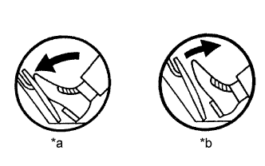
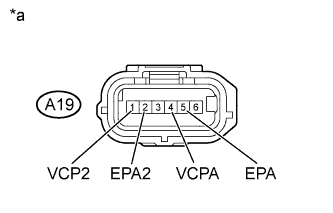

DTC P2120 Цепь датчика положения педали/дроссельной заслонки "D" |
DTC P2122 Низкий уровень сигнала на входе цепи датчика положения педали/дроссельной заслонки "D" |
DTC P2123 Высокий уровень сигнала на входе цепи датчика положения педали/дроссельной заслонки "D" |
DTC P2125 Цепь датчика положения педали/дроссельной заслонки "E" |
DTC P2127 Низкий уровень сигнала на входе цепи датчика положения педали/дроссельной заслонки "E" |
DTC P2128 Высокий уровень сигнала на входе цепи датчика положения педали/дроссельной заслонки "E" |
DTC P2138 Корреляция напряжений датчиков положения педали/дроссельной заслонки "D"/"E" |
| № DTC | Условие обнаружения DTC | Неисправный участок |
| P2120 | Напряжение VPA быстро изменяется за пределами верхнего и нижнего порогового значения неисправности в течение более 0,5 с (логика диагностирования за 1 поездку). |
|
| P2122 | Напряжение VPA составляет менее 0,4 В в течение более 0,5 с при полностью отпущенной педали акселератора (логика диагностирования за 1 поездку). |
|
| P2123 | Напряжение VPA составляет не менее 4,8 В в течение более 2,0 с (логика диагностирования за 1 поездку). |
|
| P2125 | Напряжение VPA2 быстро изменяется за пределами верхнего и нижнего порогового значения неисправности в течение более 0,5 с (логика диагностирования за 1 поездку). |
|
| P2127 | Напряжение VPA2 составляет менее 1,2 В в течение более 0,5 с при полностью отпущенной педали акселератора (логика диагностирования за 1 поездку). |
|
| P2128 | Условия (a) и (b) сохраняются в течение не менее 2,0 с (логика диагностирования за 1 поездку): (a) Напряжение VPA2 превышает 4,8 В. (b) Напряжение VPA составляет 0,4-3,45 В. |
|
| P2138 | Условие (a) или (b) сохраняется в течение не менее 2,0 с (логика диагностирования за 1 поездку): (a) Разница напряжений между VPA и VPA2 составляет менее 0,02 В. (b) Напряжение VPA составляет не более 0,4 В, а напряжение VPA2 – не более 1,2 В. |
|
| Неисправный участок | Accelerator Position No. 1 Педаль акселератора отпущена | Accelerator Position No. 2 Педаль акселератора отпущена | Accelerator Position No. 1 Педаль акселератора нажата | Accelerator Position No. 2 Педаль акселератора нажата |
| Обрыв в цепи VCP | 0 - 0,2 В | 0 - 0,2 В | 0 - 0,2 В | 0 - 0,2 В |
| Обрыв или короткое замыкание на массу в цепи VPA | 0 - 0,2 В | 1,2 - 2,0 В | 0 - 0,2 В | 3,4 - 5,0 В |
| Обрыв или короткое замыкание на массу в цепи VPA2 | 0,5 - 1,1 В | 0 - 0,2 В | 2,6 - 4,5 В | 0 - 0,2 В |
| Обрыв в цепи EPA | 4,5 - 5,0 В | 4,5 - 5,0 В | 4,5 - 5,0 В | 4,5 - 5,0 В |
| Нормальное состояние | 0,5 - 1,1 В | 1,2 - 2,0 В | 2,6 - 4,5 В | 3,4 - 5,0 В |
| 1.СНИМИТЕ ПОКАЗАНИЯ ПОРТАТИВНОГО ДИАГНОСТИЧЕСКОГО ПРИБОРА (ДАТЧИК ПОЛОЖЕНИЯ ПЕДАЛИ АКСЕЛЕРАТОРА) |
|  |
Подсоедините портативный диагностический прибор к DLC3.
Включите зажигание (IG) и портативный диагностический прибор.
Войдите в следующие меню: Powertrain / Engine and ECT / Data List / ETCS / Accelerator Position No. 1 и Accelerator Position No. 2.
Считайте значение, отображенное на диагностическом приборе.
| Состояние педали акселератора | Accelerator Position No. 1 | Accelerator Position No. 2 |
| Отпущена | 0,5-1,1 В | 1,2-2,0 В |
| Нажата | 2,6-4,5 В | 3,4-5,0 В |
| *a | Нажата |
| *b | Отпущена |
| Результат | Следующий шаг |
| OK | А |
| NG | B |
|
| ||||
| B | |
| 2.ПРОВЕРЬТЕ ЖГУТ ПРОВОДОВ И РАЗЪЕМ (ДАТЧИК ПОЛОЖЕНИЯ ПЕДАЛИ АКСЕЛЕРАТОРА – ECM) |
Отсоедините разъем датчика положения педали акселератора.
Отсоедините разъем ЭБУ.
Измерьте сопротивление в соответствии со значениями, приведенными в таблице ниже.
| Контакты для подключения диагностического прибора | Условие | Заданные условия |
| A19-6 (VPA) - G56-6 (VPA) | Всегда | Менее 1 Ом |
| A19-5 (EPA) - G56-3 (EPA) | Всегда | Менее 1 Ом |
| A19-4 (VCPA) - G56-4 (VCPA) | Всегда | Менее 1 Ом |
| A19-3 (VPA2) - G56-5 (VPA2) | Всегда | Менее 1 Ом |
| A19-2 (EPA2) - G56-1 (EPA2) | Всегда | Менее 1 Ом |
| A19-1 (VCP2) - G56-2 (VCP2) | Всегда | Менее 1 Ом |
| Контакты для подключения диагностического прибора | Условие | Заданные условия |
| A19-6 (VPA) или G56-6 (VPA) - масса | Всегда | 10 кОм или более |
| A19-5 (EPA) или G56-3 (EPA) - масса | Всегда | 10 кОм или более |
| A19-4 (VCPA) или G56-4 (VCPA) - масса | Всегда | 10 кОм или более |
| A19-3 (VPA2) или G56-5 (VPA2) - масса | Всегда | 10 кОм или более |
| A19-2 (EPA2) или G56-1 (EPA2) - масса | Всегда | 10 кОм или более |
| A19-1 (VCP2) или G56-2 (VCP2) - масса | Всегда | 10 кОм или более |
Подсоедините разъем датчика положения педали акселератора.
Подсоедините разъем ECM.
|
| ||||
| OK | |
| 3.ПРОВЕРЬТЕ ECM (НАПРЯЖЕНИЕ VCPA И VCP2) |
|  |
Отсоедините разъем датчика положения педали акселератора.
Измерьте напряжение в соответствии со значениями, приведенными в таблице.
| Контакты для подключения диагностического прибора | Положение переключателя | Заданные условия |
| A19-4 (VCPA) - A19-5 (EPA) | Зажигание включено (IG) | 4,5-5,5 В |
| A19-1 (VCP2) - A19-2 (EPA2) | Зажигание включено (IG) | 4,5 - 5,5 В |
| *a | Вид спереди разъема со стороны жгута проводов: (к датчику положения педали акселератора в сборе) |
Подсоедините разъем датчика положения педали акселератора.
|
| ||||
| OK | |
| 4.ЗАМЕНИТЕ ДАТЧИК ПОЛОЖЕНИЯ ПЕДАЛИ АКСЕЛЕРАТОРА В СБОРЕ |
Замените датчик положения педали акселератора в сборе (Нажмите здесь).
| ДАЛЕЕ | |
| 5.ПРОВЕРЬТЕ, ВОЗОБНОВЛЯЕТСЯ ЛИ ВЫВОД DTC (DTC ДАТЧИКА ПОЛОЖЕНИЯ ПЕДАЛИ АКСЕЛЕРАТОРА) |
Подсоедините портативный диагностический прибор к DLC3.
Включите зажигание (IG) и портативный диагностический прибор.
Сбросьте коды DTC (Нажмите здесь).
Запустите двигатель.
Дайте двигателю поработать на холостом ходу в течение 15 секунд.
Войдите в следующие меню: Powertrain / Engine and ECT / DTC.
Считайте коды DTC.
| Результат | Следующий шаг |
| P2120, P2122, P2123, P2125, P2127, P2128 и/или P2138 | А |
| Коды не выводятся | B |
|
| ||||
| А | ||
| ||